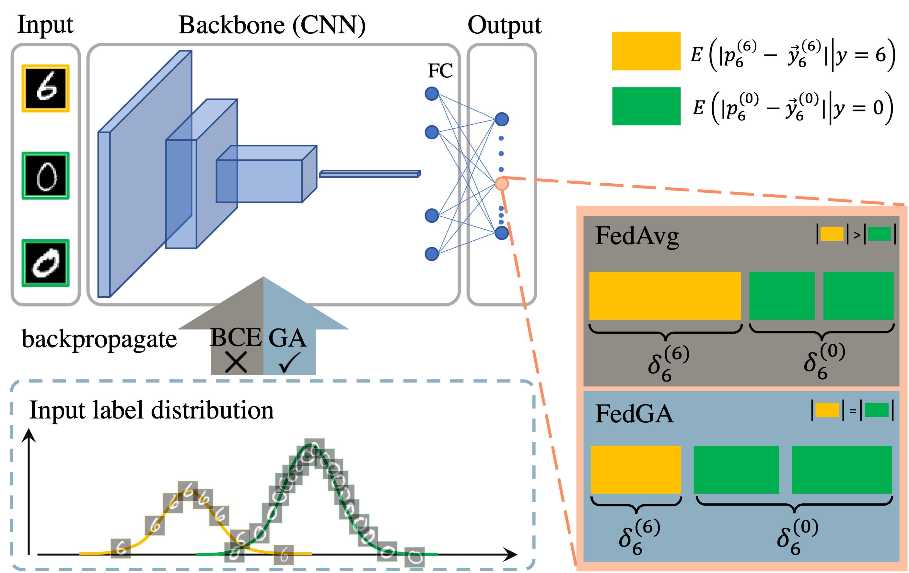
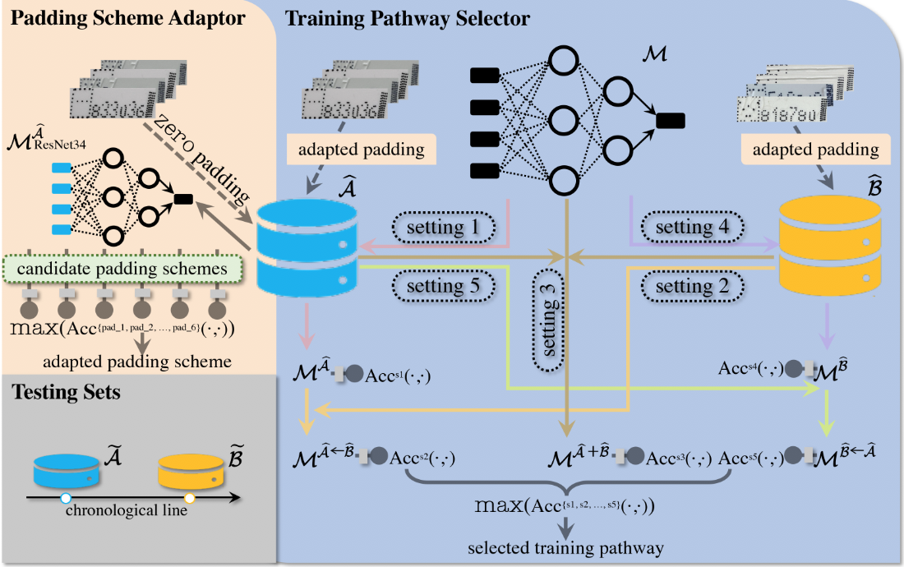
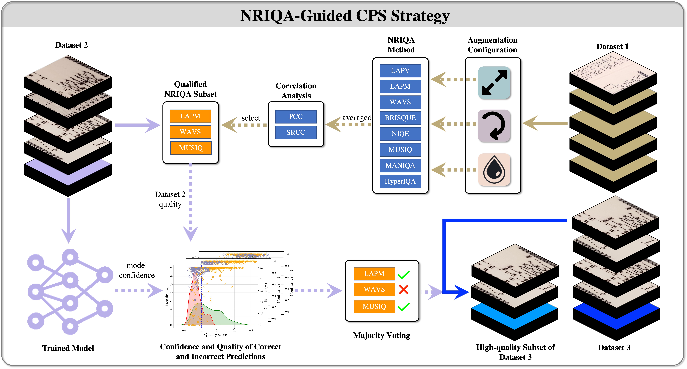
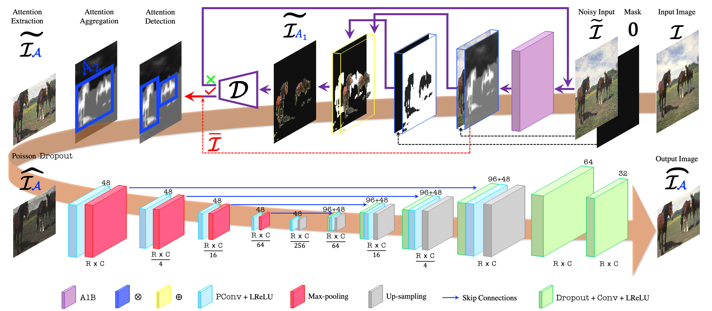
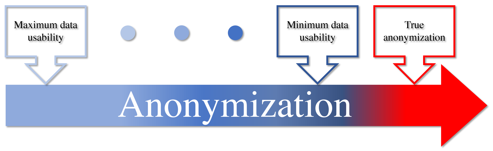
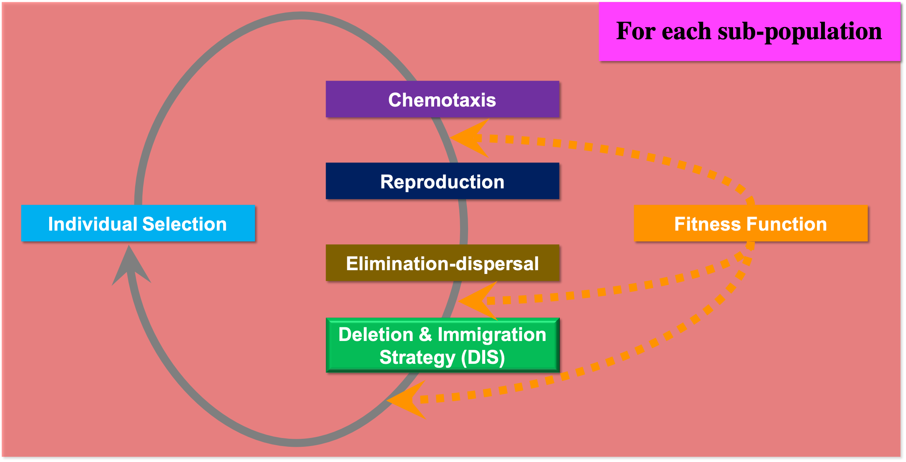

Selected Publications [Full Publication List]

FedGA: Federated Learning with Gradient Alignment for Error Asymmetry Mitigation
AAAI Conference on Artificial Intelligence (AAAI) Workshop on Federated Learning for Unbounded and Intelligent Decentralization, oral, 2025
*Corresponding author

An Augmentation-based Model Re-adaptation Framework for Robust Image Segmentation
European Conference on Computer Vision (ECCV) Workshop on Vision-based InduStrial InspectiON, oral + poster, 🏆Best Paper Award, 2024






Adaptive Activation Function Generation for Artificial Neural Networks through Fuzzy Inference with Application in Grooming Text Categorisation
IEEE 28th International Conference on Fuzzy Systems (FUZZ-IEEE), oral, 🏆IEEE Computational Intelligence Society Outstanding Student-Paper Travel Grant Award, 2019
Enhanced Gradient-based Local Feature Descriptors by Saliency Map for Egocentric Action Recognition
MDPI Applied System Innovation (ASI), , (SJR: Q1, IF: 3.8), Highlighted as cover story [link], 2019